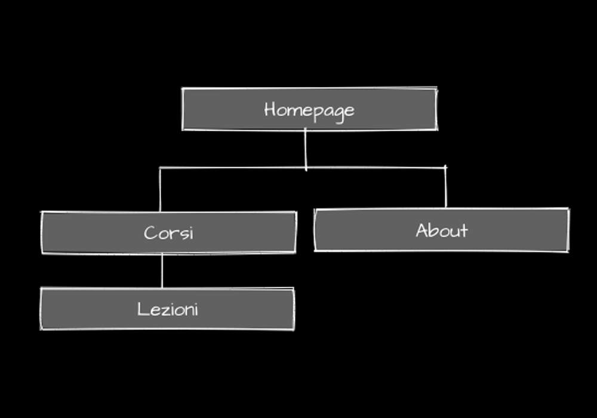
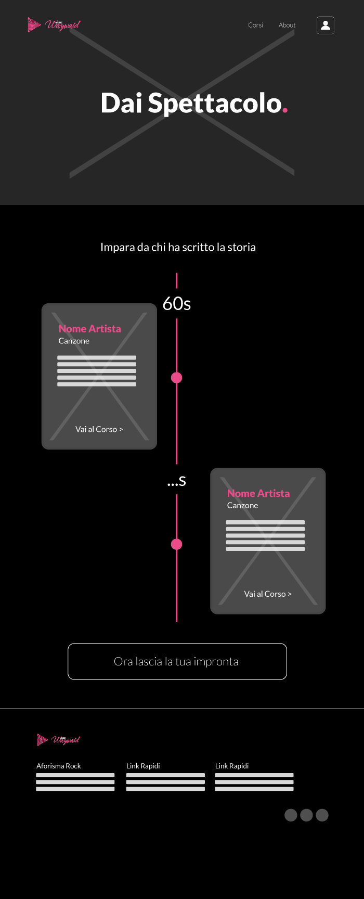
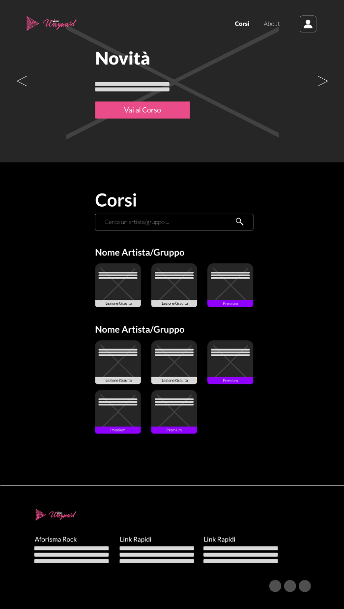
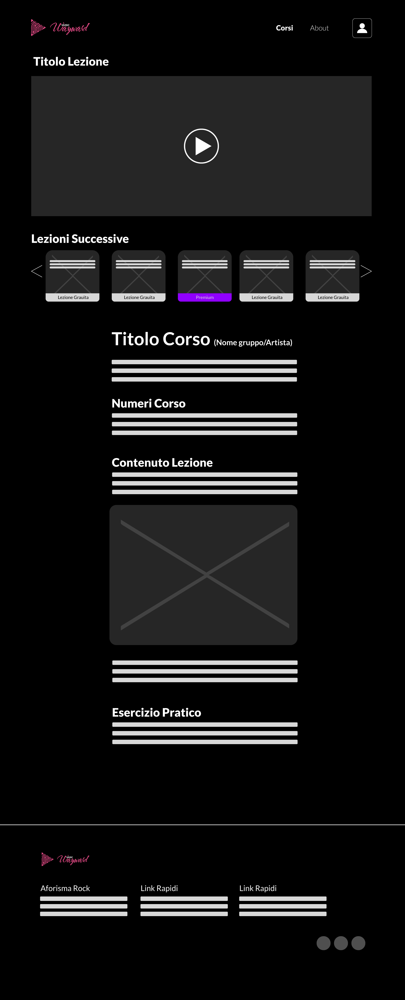
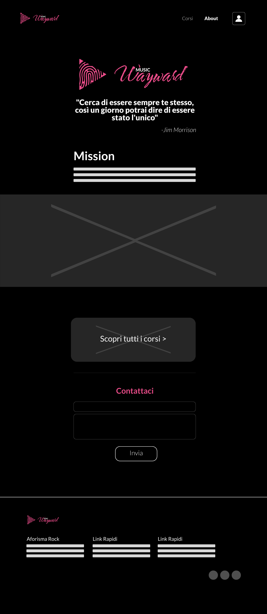

Documentazione
Abstract
Il portale Wayward Music è stato realizzato perchè è incredibilmente facile imparare a suonare uno strumento su internet, ma non è altrettanto semplice trovare qualcosa che aiuti un giovane artista a definire la sua impronta musicale.
Wayward Music aiuta infatti ogni giovane artista a studiare lo stile di leggende che hanno fatto la storia! E se si cerca qualcosa di più attuale, è possibile imparare anche dall'abilità degli artisti contemporanei di evolvere la propria musica per rimanere in vetta. Le videolezioni sono come brevissimi documentari, e offrono spunti continui per provare quanto imparato: la piattaforma obbliga l'utente a mettersi in gioco per poter proseguire.
Project Management Plan
Benchmarking
L’obiettivo di Wayward Music è la realizzazione di un portale web che, attraverso canzoni e aneddoti realtivi alla musica rock contemporanea e non, invogli l'utente target a mettersi in gioco. La ricerca del proprio stile, imparando dai grandi artisti del passato, e il come differenziarsi è quello che viene offerto attraverso questo servizio
I pilastri su cui si basa Wayward Music sono: contenuti testuali, immagini, front-end portale devono tramettere il senso di Ribellione e del “differenziarsi essendo se stessi”. Il Target a cui Wayward Music si rivolge sono giovani artisti In primo luogo è stata svolta un’attenta richerca su internet, con lo scopo di individuare Competitors già esistenti che afffrontassero temi analoghi a Wayward Music:
Nam Target più ampio rispetto a Wayward Music,
a livello di contenuti al
centro
dell’attenzione nam e invece Wayward Music è l’artista il protagonista
Vibly Target diverso, servizio diverso
(lezioni e non storytelling)
Struttura e layout
Architettura del sito
Wireframe
   Scelte Grafiche
Font:
Libreria Font utilizzata: Google Fonts
- Font 1: “Water Brush”, cursive. Obiettivo: enfarizzare il sentimento di ribellione (nostro leitmotiv)
- Font 2: “Lato”, sans-serif Per quanto riguarda invece la scelta del font della scritta music rappresentare di più la classicità e la solidità della Musica in modo tale che ci fosse della contrapposizione tra le due parole, contrapposizione richiamata anche all’interno del portale
Palette Cromatica:
#ea4c89
#8f00ff
#ffffff
#000000
Per la scelta cromatica siamo partiti dalla foto di una ragazza che evocava il senso di libertà e di “essere se stessa”
Peculiarità Stilistiche:
Nella realizzazione del portale Wayward Music è stata fatta particolare attenzione a UI e UX, rispettando sempre il proprio leitmotiv e creando un sito esperienziale. Nella Homepage è stato utilizzato un Visual Storytelling: partendo dalla foto di un concerto dove non si vede la band si è voluto far immedesimare l’utente target come “il gruppo che potrebbe star suonando in quel palco con tanta gente”, navigando verso il basso appaiono canzoni e band che hanno fatto la storia del rock e come sezione finale vi è la call to action con una frase evocativa che vuole creare empatia con l’utente, invogliando il giovane artista a mettersi in gioco. La cura dei dettagli è stata la nostra prorità, per esempio i bottoni con state hover su sfondo nero assumono le sembianze (magari da cambiare) di luci accese durante un concerto
Immagini:
INSERISCI IMMAGINI TESTO....
Linguaggi e Strumenti:
- HTML: Struttura sito
- CSS: Grafica sito
- JavaScript: Aforismi e Preloader
- JQuery: Navbar per scroll
- Bootstrap: Supporto per grafica e Responsiveness
- Google Analytics: Supporto per grafica e Responsiveness
- Adobe Illustrator: Realizzazione Logo
- Adobe Photoshop: Realizzazione Logo
- PowerPoint: Presentazione